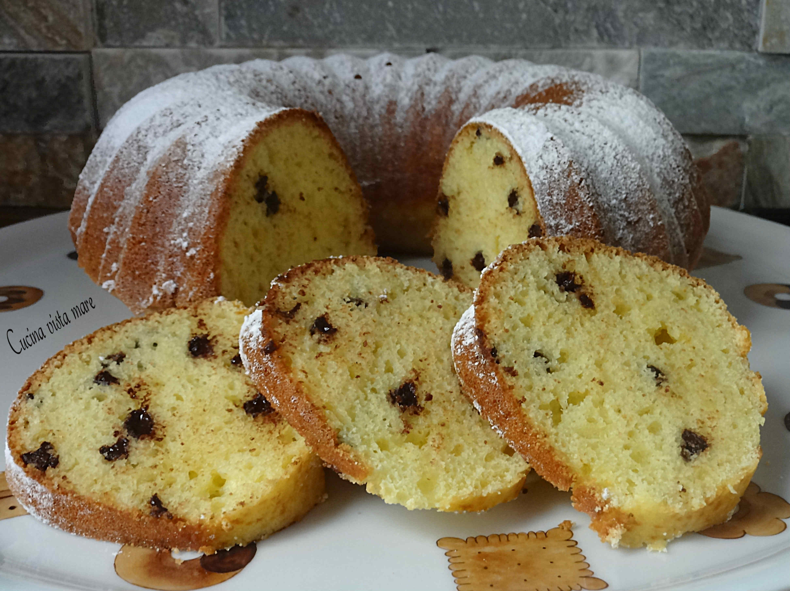

Ciambellone alla ricotta
Ingredienti
- 300 g di ricotta
- 300 g di farina
- 200 g di zucchero
- 125 g di gocce di cioccolato
- 1 uovo
- 1 bustina di lievito
Preparazione
1. Preparazione dell'Impasto: In una ciotola capiente, mescola tutti gli ingredienti fino a ottenere un composto omogeneo. Assicurati che la ricotta sia ben amalgamata con gli altri ingredienti per evitare grumi.
2. Cottura: Versa l'impasto in uno stampo per ciambelle precedentemente imburrato e infarinato. Cuoci in forno preriscaldato a 180°C per circa 30 minuti, o fino a quando la superficie non sarà dorata e uno stecchino inserito al centro uscirà pulito.
3. Raffreddamento e Servizio: Lascia raffreddare il ciambellone nello stampo per qualche minuto, poi sformalo su una griglia per farlo raffreddare completamente. Servilo spolverato con zucchero a velo, se desiderato.